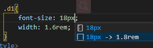

rem详解及屏幕自适应方法¶
1. rem是什么？¶
rem（font size of the root element）是指相对于根元素的字体大小的单位。简单的说它就是一个相对单位。看到rem大家一定会想起em单位，em（font size of the element）是指相对于父元素的字体大小的单位。它们之间其实很相似，只不过一个计算的规则是依赖根元素一个是依赖父元素计算。
兼容性 目前，IE9+，Firefox、Chrome、Safari、Opera 的主流版本都支持了rem。
1rem等于多少px呢?
rem是相对根元素的字体大小单位，要知道1rem等于多少px，首先要知道根元素值；默认状态下，浏览器的默认文字大小为16px；所以1rem默认情况下就等于16px
html{
font-size:16px; //默认大小
}
p {
font-size: 1rem;
font-size:16px;
}
要设置字体大小为18px用rem表示是多少呢?
p{
font-size:18px;
font-size: 18/16rem;
}
2.为了容易计算rem的值，将根元素设置为62.5%(10px)¶
html{
font-size:62.5%;
font-size:10px; //或者直接设置为10px
}
body{
font-size:12px;
font-size:1.2rem;
}
p{
font-size:14px;
font-size:1.4rem;
}
因为默认状态下，浏览器的默认文字大小为16px，16*0.625=10px，这样就有1rem=10px，用到数值就很容易计算。 例如需要20像素的宽度，则可以设置为width:2rem; 这样设置的好处是便于处理响应式布局，只需要根据需要调整根元素的font-size就可以直接对所有rem相对单位的属相关元素同时调整。
3.如何适配各种设备屏幕¶
了解了 rem 的基本原理，我们来看看如何利用rem来完美适配各种设备屏幕。 理想的适配是把设计稿直接等比缩放在设备上，这样在任何不同的屏幕上布局都会很完美，手淘就是用的 rem 来进行适配的。
3.1 解决方案 rem.js 来解决适配问题¶
事实上 rem.js 是把屏幕等分成 20 份，每份为 1rem ， 1rem 对应的大小就是 rem基准值 ，rem.js 做的就是把 rem基准值 给html的 font-size ，所以如果设备的 物理像素 宽为 640px，那么 1rem=640px/20=32px , html的 font-size为32px 。
因为 rem.js 是作用在``上，所以页面引入的时候最好是放在所有资源之前，例如：
<!DOCTYPE html>
<html>
<head>
<meta charset="utf-8" />
<meta http-equiv="X-UA-Compatible" content="IE=edge,chrome=1" />
<title>rem自适应</title>
<meta name="description" content="" />
<meta name="keywords" content="" />
<script type="text/javascript" src="js/rem.js"></script>
<link href="css/style.css" rel="stylesheet" />
</head>
<body>
<div>rem自适应！</div>
</body>
</html>
/* rem.js文件内容 */
(function () {
var html = document.documentElement;
function onWindowResize() {
html.style.fontSize = html.getBoundingClientRect().width / 20 + 'px';
}
window.addEventListener('resize', onWindowResize);
onWindowResize();
})();
在我们实际切图的时候，对于视觉稿上的元素尺寸换算，只需要元素的 原始的px值(即你量的大小)**除以 **rem基准值 即可。例如设计稿的大小为640px， rem基准值 = 640px/20 = 32px ，有个元素的大小你量出来是 140px*286px ，那么换算过来就是：
140px = 140/32 = 4.375rem286px = 286/32 = 8.9375rem
3.2 px自动转换为rem¶
1. vscode插件: cssrem
cssrem
A px to rem plugin in VSCode
2.配置默认根元素值，也就是rem基准值 1rem=?px , 默认1rem=16px
-
打开vscode: File->Preferences ->Settings
-
搜索 cssrem
- 当vscode样式大小进插件会自动提示

4.vue 中使用rem布局¶
在用vue或react等工具搭建一个移动端项目时,怎样做到自适应呢? 当然选择rem布局比较方便快捷. 此处已vue为例,在使用vue-cli搭建好项目框架后,在目录结构的index.html文件中添加一段js代码:
fnResize();
window.onresize = function () {
fnResize();
}
function fnResize() {
var deviceWidth = document.documentElement.clientWidth || window.innerWidth;
if (deviceWidth >= 750) {
deviceWidth = 750;
}
if (deviceWidth <= 320) {
deviceWidth = 320;
}
document.documentElement.style.fontSize = (deviceWidth / 7.5) + 'px';
}
然后在写css就可以将px单位换成rem. 这里设置的比例是100px=1rem, 例如:宽度为100px时,可以直接写成1rem
4.1 另一种写法¶
<script>
var width = document.documentElement.clientWidth
var css = `
html{
font-size: ${width/10}px;
}
`
document.write(`<style>${css}</style>`)
</script>